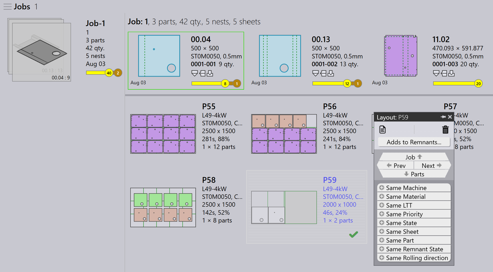

Hantering av manuella restbitar
Konfigurera manuell restbit
-
Klicka på Factory → Settings → Job.
-
Välj Update sheet inventory on nest (un)release.

Detta säkerställer att restbitar spåras och uppdateras i plåtlagret när en nest slutförs eller frisätts.
Manuell restbit från job
-
Högerklicka på en layout som markerats som slutförd (layout med grön bock).
-
Klicka på alternativet Adds to Remnants.
-
Nu läggs restbiten till manuellt i plåtdatabasen.

Manuell restbit från jobbnest
-
Växla till JOB → sidan Nests. Använd Filters och välj State.
-
Välj Completed för att visa alla slutförda layouter.
-
Högerklicka på den layout för vilken en manuell restbit ska skapas och klicka på Adds to Remnants.

Ta bort restbitar
Om en manuellt skapad restbit är skadad eller förlorad kan du ta bort den från plåtlagret utan att radera den direkt.
-
Högerklicka på den restbit du vill ta bort.
-
Klicka på alternativet Remove from Remnants….
-
Restbiten tas bort från plåtdatabasen.
-
Den delvis skuggade fyrkantsikonen som indikerar att restbiten har skapats rensas också när restbiten tas bort.
| Restbitar (skapade automatiskt/manuellt) används med hög prioritet under automatisk nestplan eller interaktiv nestplan. |